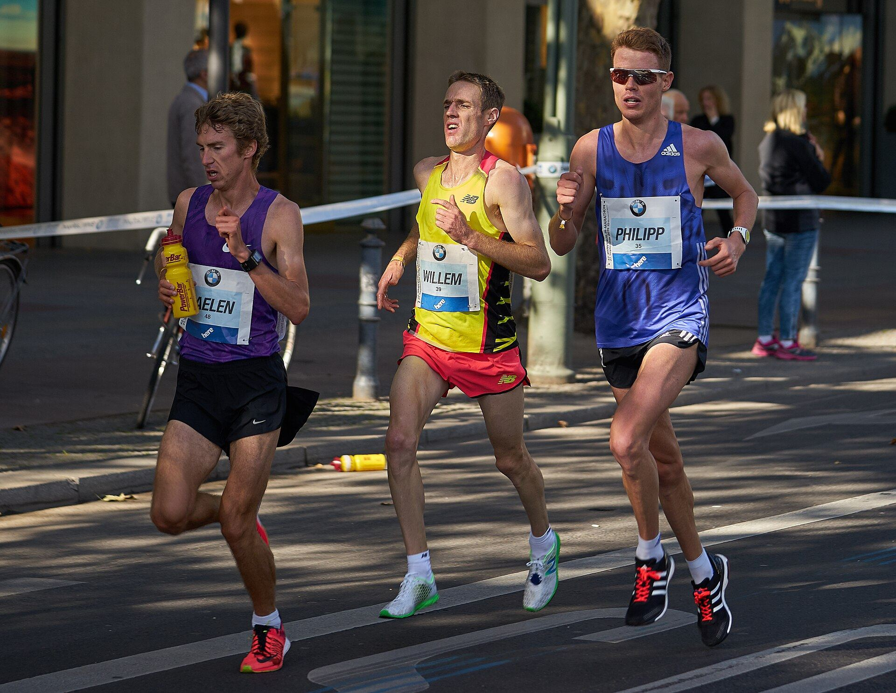

Unit 1
Active Lessons Live
Homeostasis
Anchor: Marathon runner passing out. Model cellular respiration, energy transfer to ATP, and internal control via thermoregulation, osmoregulation, and blood glucose loops.